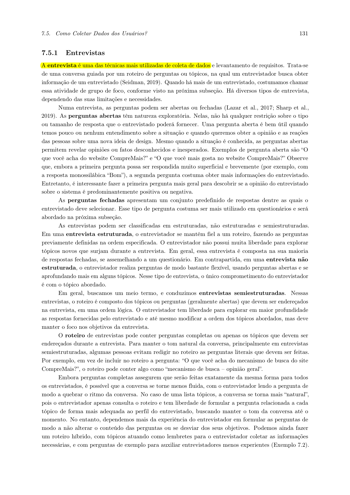
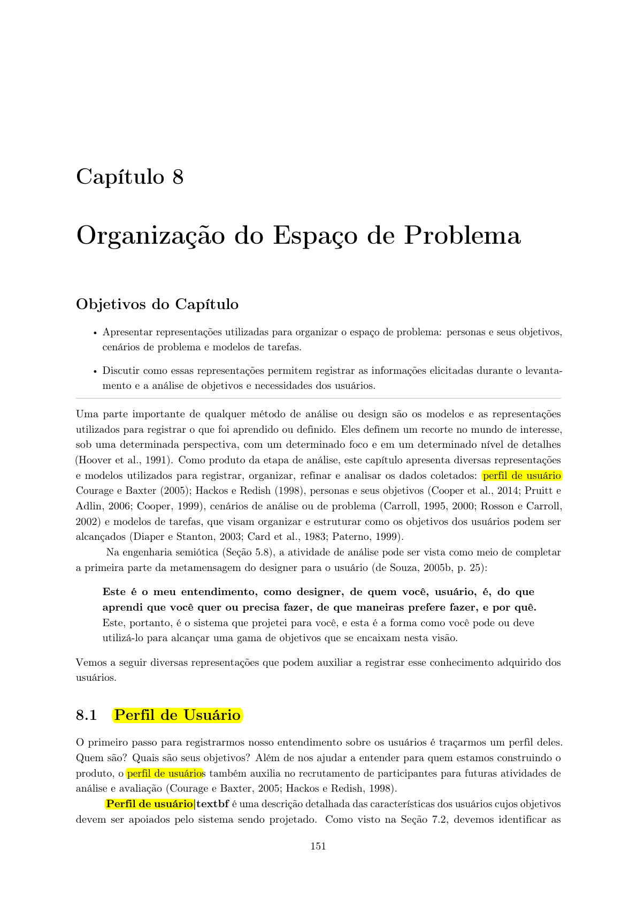

Perfil do Usuário
Tabela de Contribuição
| Integrante | Contribuição no Artefato | Data | Ferramenta de IA e Contribuição |
|---|---|---|---|
| Vinicius Silva Araruna | Estruturação metodológica, fundamentação demográfica com base secundária (IBGE) e autoria do Perfil 1 (Estudante / Usuário Comum). | 09/10/2026 | Suporte na estruturação Markdown e formatação de dados estatísticos. |
| Gustavo Antonio Rodrigues e Silva | Autoria individual e detalhamento completo do Perfil 2 (Moderador / Guardião da Comunidade), consolidação da matriz comparativa e adequação pós-revisão por pares do PR #71. | 21/10/2026 | LLM (Antigravity): apoio na formulação dos atributos de moderação e alinhamento às diretrizes do Discourse. |
| Edvaldo Soares Brasileiro Filho | Autoria individual do Perfil 3 (Administrador / Gestor do Sistema) e elaboração da lista de verificação. | 09/10/2026 | LLM: apoio na síntese de atributos de infraestrutura e revisão cruzada por pares. |
1. Introdução
Este artefato apresenta a caracterização completa e consolidada dos perfis de usuário do Fórum Diolinux Plus, no âmbito da disciplina de Interação Humano-Computador (FGA0173), ministrada pelo Prof. Dr. André Barros de Sales, na Faculdade UnB Gama (FGA/UnB).
A definição precisa de perfis de usuário constitui a base fundamental para guiar a análise de requisitos, a engenharia de usabilidade e as decisões de design da interface. Conforme alertam Barbosa e Silva (2021, p. 160–166), sem uma sólida caracterização empírica e metodológica do público-alvo, os projetistas tendem a cometer o erro clássico de projetar para si mesmos — tomando suas próprias preferências e aptidões cognitivas como referência universal —, gerando o fenômeno do "usuário elástico" (Cooper et al., 2014).
Em atendimento às diretrizes do docente e às observações da monitoria (OBS 3, Item 10), este documento foi completamente reformulado para abandonar a divisão rasa por "nível de experiência técnica isolada" e adotar uma categorização por papéis funcionais e hierárquicos de utilização na comunidade do Discourse:
- Perfil 1 — Estudante / Usuário Comum (em busca de suporte e aprendizado);
- Perfil 2 — Moderador (Guardião da Comunidade e curador de conteúdo);
- Perfil 3 — Administrador (Gestor do Sistema, infraestrutura e governança).
Autor do Item Teórico: Vinicius Silva Araruna | Revisores: Gustavo Antonio Rodrigues e Silva e Edvaldo Soares Brasileiro Filho
2. Metodologia de Elicitação e Base Demográfica Secundária
A consolidação destes perfis fundamentou-se em uma abordagem metodológica empírica e documental rigorosa (triangulação de dados auditáveis), recomendada pela literatura de IHC (Barbosa e Silva, 2021; Mayhew, 1999; Courage e Baxter, 2005):
- Entrevistas Semiestruturadas com Estudantes Universitários: Condução de entrevistas gravadas (via Google Meet e presenciais) com estudantes universitários de graduação, investigando rotinas de estudo, modelos mentais, dificuldades de navegação e atitudes emocionais frente a falhas de software e estratégias de busca no suporte técnico.
- Análise Documental e Observação Sistemática da Plataforma: Levantamento de métricas e dados públicos do Fórum Diolinux Plus (frequência de tópicos, badges de gamificação, níveis de confiança Trust Levels do Discourse, fluxos de moderação e categorização taxonômica).
- Sessões de Brainstorming da Equipe: Reuniões estruturadas entre os integrantes do grupo para mapear as jornadas dos usuários, papéis funcionais e hipóteses de interação no ecossistema do Discourse.
- Fundamentação Demográfica com Dados Secundários (IBGE / Cetic.br): Para situar os perfis no panorama sociodemográfico brasileiro de forma sólida e auditável, foram incorporados os dados da pesquisa PNAD Contínua TIC Domicílios (IBGE, 2023/2024) e do Cetic.br (2023) sobre o perfil de usuários de computadores e internet no Brasil:
- A posse de microcomputadores e notebooks no Brasil concentra-se expressivamente nas faixas etárias de 18 a 34 anos (58,4% dos usuários ativos) com grau de instrução universitário completo ou em andamento (IBGE, 2023);
- A realização de cursos, pesquisas de estudo e participação em fóruns de discussão especializados possui maior prevalência entre estudantes de nível superior e jovens profissionais das áreas de Ciências Exatas e Tecnologia (Cetic.br, 2023);
- A banda larga fixa de alta velocidade é utilizada por mais de 83% dos lares dessa faixa acadêmica, permitindo acesso contínuo a plataformas web dinâmicas como o Discourse sem severas limitações de largura de banda, priorizando-se a velocidade de renderização e usabilidade da interface gráfica.
A Figura 1 apresenta a fundamentação conceitual da técnica de entrevistas em IHC, extraída diretamente da obra de Barbosa e Silva (2010, p. 131).

Figura 1 — Trecho do livro de Barbosa e Silva detalhando a técnica de Entrevistas. Fonte: Barbosa e Silva (2010, p. 131).
Autor do Item Teórico: Vinicius Silva Araruna | Revisores: Gustavo Antonio Rodrigues e Silva e Edvaldo Soares Brasileiro Filho
3. Grupos de Atributos Investigados
Seguindo o referencial teórico de Hackos e Redish (1998) citado e aprofundado por Barbosa e Silva (2021, p. 162), a caracterização de cada perfil de usuário estruturou-se em torno de dimensões analíticas rigorosas:
- Dados demográficos e contexto: Faixa etária, escolaridade, ocupação, ambiente físico de uso e dispositivos utilizados;
- Experiência tecnológica e no domínio: Proficiência com sistemas operacionais Linux, distribuições, terminal, arquitetura web e manipulação de fóruns;
- Atitudes e estratégias: Motivação intrínseca/extrínseca, predisposição psicológica frente à tecnologia (tecnófilo ou tecnófobo), tolerância a frustrações e hábitos de resolução de problemas;
- Tarefas e objetivos: Conjunto de atividades primárias e secundárias desempenhadas no ambiente da plataforma;
- Necessidades de interação e pontos de dor: Recursos essenciais de interface e gargalos de usabilidade mapeados nas tarefas do Discourse.
A Figura 2 ilustra a estrutura dos grupos de atributos que caracterizam o perfil de usuário na perspectiva ergonômica de IHC, conforme sistematizado por Barbosa e Silva (2010, p. 162).

Figura 2 — Grupos de atributos que caracterizam o perfil de usuário. Fonte: Barbosa e Silva (2010, p. 162).
Autor do Item Teórico: Vinicius Silva Araruna | Revisores: Gustavo Antonio Rodrigues e Silva e Edvaldo Soares Brasileiro Filho
4. Caracterização Consolidada dos Perfis Funcionais
4.1 Perfil 1 — Estudante / Usuário Comum em Busca de Suporte
- Autor principal: Vinicius Silva Araruna
- Revisor: Gustavo Antonio Rodrigues e Silva
O Estudante / Usuário Comum representa a maior parcela do público ativo no fórum (estimada em mais de 85% do fluxo total de visitantes e cadastrados). Seu objetivo precípuo é sanar dúvidas práticas relativas à instalação de distribuições (como Ubuntu, Fedora, Linux Mint), incompatibilidade de drivers (áudio, Wi-Fi, placas de vídeo) ou alternativas em software livre para softwares proprietários de engenharia e desenvolvimento.
A Tabela 1 detalha os atributos investigados e preenchidos para este perfil.
Tabela 1 — Caracterização Completa do Perfil 1: Estudante / Usuário Comum
| Dimensão de Análise | Atributo Investigado | Caracterização Consolidada |
|---|---|---|
| Dados Demográficos | Faixa etária | 18 a 28 anos (predominância universitária e jovens profissionais). |
| Escolaridade e Ocupação | Ensino Superior incompleto ou completo (Engenharias, Computação, TI, Design); estudantes de graduação e estagiários. | |
| Contexto de Uso | Computador pessoal (desktop/notebook) em ambiente acadêmico ou domiciliar; conexão banda larga via Wi-Fi; navegadores modernos (Google Chrome, Firefox, Brave). | |
| Experiência Tecnológica | Tempo de uso de Linux | Iniciante a intermediário (de poucos meses a 2 anos). Utiliza distribuições com interface amigável (Ubuntu, Mint, Zorin OS, Fedora). |
| Familiaridade com Terminal | Básica a intermediária. Executa comandos rotineiros copiados de tutoriais (apt update, flatpak install), mas receia executar comandos destrutivos sem explicação prévia. |
|
| Domínio de Fóruns Web | Conhecimento padrão de navegação web. Costuma chegar ao fórum via motores de busca (Google) ao pesquisar uma mensagem de erro literal. | |
| Conhecimento do Domínio | Compreensão de Software Livre | Conhece os conceitos básicos de código aberto, mas prioriza a funcionalidade imediata das ferramentas para suas entregas acadêmicas. |
| Sintaxe e Formatação | Conhece superficialmente Markdown; frequentemente esquece de usar crases triplas (```) para encapsular saídas de terminais ou logs, poluindo o layout do post. |
|
| Atitudes e Estratégias | Postura Tecnológica | Tecnófilo pragmático. Aprecia tecnologia e inovação, mas busca eficiência e rapidez na solução dos seus impedimentos técnicos. |
| Motivação Primária | Obter ajuda para destravar tarefas acadêmicas/profissionais e encontrar tutoriais confiáveis em língua portuguesa. | |
| Tolerância à Frustração | Média para baixa. Caso pesquise no fórum e receba apenas tópicos antigos ou respostas herméticas com jargões técnicos excessivos, tende a abandonar o site. | |
| Tarefas Primárias | Busca de Tópicos Resolvidos | Pesquisar mensagens de erro ou termos técnicos no campo de busca do fórum para tentar resolver a dúvida de forma autônoma. |
| Criação de Tópico de Dúvida | Publicar nova dúvida fornecendo especificações da máquina, distribuição utilizada e prints/logs da falha. | |
| Interação e Resposta | Ler orientações postadas pela comunidade, testar comandos e assinalar a mensagem que efetivamente solucionou a questão como Solução. | |
| Tarefas Secundárias | Onboarding com Discobot | Realizar o tutorial interativo opcional de boas-vindas para ambientação com a sintaxe e regras da plataforma. |
| Reconhecimento Comunitário | Curtir postagens prestativas e responder esporadicamente a tópicos de outros iniciantes quando domina a solução. | |
| Necessidades de Interação | Clareza no Editor de Texto | Pré-visualização (live preview) nítida e intuitiva ao redigir mensagens; botões evidentes para inserção de blocos de código formatado e imagens. |
| Filtros de Pesquisa Visuais | Identificação rápida de respostas marcadas oficialmente como "Resolvido" e capacidade de ordenar resultados pelos mais recentes. | |
| Dificuldades e Pontos de Dor | Complexidade de Categorias | Dificuldade em classificar corretamente a dúvida na criação do tópico em meio a dezenas de categorias e subcategorias do Discourse. |
| Sintaxe de Busca Avançada | Desconhecimento de operadores de busca do Discourse (ex: category:iniciantes status:solved), dependendo exclusivamente da busca textual rasa. |
Fonte: Elaborada por Vinicius Silva Araruna, 2026. Consolidada com dados de entrevistas semiestruturadas, análise documental, brainstorming e dados secundários (IBGE/Cetic.br).
4.2 Perfil 2 — Moderador (Guardião da Comunidade)
- Autor principal: Gustavo Antonio Rodrigues e Silva
- Revisor: Edvaldo Soares Brasileiro Filho
O Moderador atua como a linha de frente da sustentabilidade, ordem e organização do Diolinux Plus. Trata-se de membros voluntários altamente assíduos e de elevada confiança comunitária (Trust Level 4 / Leader ou nomeados pela administração). O moderador possui interface enriquecida com ferramentas contextuais de governança, botões flutuantes de ação rápida e acesso ao painel de denúncias (Flag Review Queue).
A Tabela 2 apresenta a caracterização completa e minuciosa deste perfil.
Tabela 2 — Caracterização Completa do Perfil 2: Moderador
| Dimensão de Análise | Atributo Investigado | Caracterização Consolidada |
|---|---|---|
| Dados Demográficos | Faixa etária | 22 a 42 anos (profissionais maduros e membros veteranos do ecossistema de software livre). |
| Escolaridade e Ocupação | Ensino Superior completo ou Pós-Graduação em Ciência da Computação, Engenharia de Software, Redes ou áreas afins; profissionais de TI, administradores de sistemas (sysadmins) e programadores sêniores. | |
| Contexto de Uso | Acesso predominante via desktop/notebook com múltiplos monitores; periféricos de alta produtividade; acesso diário ou em múltiplos turnos. | |
| Experiência Tecnológica | Tempo de uso de Linux | Avançado a especialista (acima de 5 anos de uso contínuo de distribuições estáveis e rolling release: Debian, Arch Linux, Fedora, openSUSE). |
| Familiaridade com Terminal | Avançada. Amplo domínio de shell script, depuração de logs de sistema (journalctl, dmesg) e conceitos de arquitetura de SO. |
|
| Domínio do Discourse | Profundo. Conhece detalhadamente atalhos de teclado (ex: teclas j/k para navegação, m para mutar, f para favoritar), mecânicas de pontuação e permissões de tópicos. |
|
| Conhecimento do Domínio | Normas e Código de Conduta | Conhece integralmente as diretrizes comunitárias, regras de respeito mútuo, políticas contra pirataria e taxonomia oficial de categorias do Diolinux Plus. |
| Sintaxe e Formatação | Domínio total de Markdown, BBCode e HTML seguro permitido pela plataforma; habilidade em reformatar rapidamente mensagens mal estruturadas de terceiros. | |
| Atitudes e Estratégias | Postura Tecnológica | Tecnófilo altruísta e organizador. Dedica parte significativa do seu tempo livre para sanear o fórum, movido por sentimento de pertencimento e defesa da comunidade. |
| Motivação Primária | Manter a qualidade das informações técnicas arquivadas, evitar a proliferação de desinformação/trollagem e recepcionar cordialmente novos usuários. | |
| Postura Frente a Infrações | Imparcial, dialógica e pedagógica com novatos que cometem deslizes leves; enérgica e imediata contra comportamentos tóxicos, spam e propaganda indevida. | |
| Tarefas Primárias | Curadoria e Organização | Mover tópicos criados em categorias incorretas para as categorias apropriadas; renomear títulos vagos ("Ajuda por favor!") para títulos descritivos; mesclar (merge) tópicos duplicados. |
| Gestão da Fila de Denúncias | Analisar postagens sinalizadas pela comunidade (flags de spam, ofensas ou conteúdo impróprio), tomando ações de aprovação, ocultação ou exclusão. | |
| Moderação de Comportamento | Emitir advertências formais na plataforma, aplicar suspensões ou silenciamentos temporários e fechar tópicos inflamados ou fora de escopo. | |
| Tarefas Secundárias | Acolhimento a Iniciantes | Orientar novos usuários sobre como formatar comandos e postar logs sem comprometer a legibilidade. |
| Validação de Soluções | Marcar como oficial a solução de tópicos cujos autores esqueceram de validar, assegurando que outros pesquisadores encontrem a resposta correta. | |
| Necessidades de Interação | Ações em Lote Eficientes | Ferramentas para seleção múltipla de posts e ações em lote (excluir múltiplos spams do mesmo invasor em 1 clique). |
| Prevenção de Erros Destrutivos | Diálogos de confirmação explícitos e recursos de reversão (undo/restore) para evitar fechamentos ou exclusões acidentais de postagens legítimas. | |
| Dificuldades e Pontos de Dor | Sobrecarga de Notificações | Excesso de denúncias repetidas em horários de pico, demandando filtragem manual exaustiva na fila de moderação. |
| Falta de Contexto em Denúncias | Dificuldade em julgar mensagens denunciadas isoladamente que requerem a leitura prévia de dezenas de mensagens anteriores de uma discussão acalorada. |
Fonte: Elaborada por Gustavo Antonio Rodrigues e Silva, 2026. Baseada nas dinâmicas operacionais do Discourse e dados comunitários.
4.3 Perfil 3 — Administrador (Gestor do Sistema)
- Autor principal: Edvaldo Soares Brasileiro Filho
- Revisor: Vinicius Silva Araruna
O Administrador representa o gestor absoluto da infraestrutura e dos parâmetros estratégicos do Diolinux Plus. É composto pela equipe oficial de fundadores, mantenedores técnicos e líderes do projeto Diolinux. Seu foco de interação não é a leitura ou publicação de posts cotidianos, mas sim o Painel Administrativo do Discourse (Admin Dashboard), uma interface altamente técnica dedicada ao monitoramento de servidores, segurança da informação, conformidade com a LGPD e parametrização global do sistema.
A Tabela 3 detalha os atributos caracterizados para este perfil.
Tabela 3 — Caracterização Completa do Perfil 3: Administrador
| Dimensão de Análise | Atributo Investigado | Caracterização Consolidada |
|---|---|---|
| Dados Demográficos | Faixa etária | 25 a 50 anos (profissionais seniores de liderança técnica). |
| Escolaridade e Ocupação | Ensino Superior completo ou Especialização em Engenharia de Redes, Infraestrutura Cloud, DevOps ou Ciência da Computação; mantenedores oficiais e gestores de infraestrutura do Diolinux. | |
| Contexto de Uso | Estações de trabalho profissionais com conexões redundantes e seguras (VPNs, chaves SSH, autenticação multifator obrigatória). | |
| Experiência Tecnológica | Tempo de uso de Linux | Especialista (mais de 8 anos). Vivência corporativa em ambientes de produção com alta carga e tráfego massivo. |
| Conhecimento de Infraestrutura | Especialista em servidores Linux (Debian/Ubuntu Server), conteinerização (Docker), bancos de dados relacionais e em memória (PostgreSQL, Redis), servidores web reversos (Nginx) e entrega de conteúdo (CDN Cloudflare). | |
| Domínio do Discourse | Arquitetural. Domínio completo das variáveis de ambiente (app.yml), rotinas de reconstrução de container (launcher rebuild app), rotas de API e webhooks. |
|
| Conhecimento do Domínio | Governança e Negócios | Compreensão de métricas de retenção de audiência, taxas de conversão de apoiadores, integração com canais do YouTube e sustentabilidade financeira do projeto. |
| Segurança e Privacidade | Profundo conhecimento em mitigação de ataques DDoS, vazamento de credenciais, filtros anti-spam bayesianos e adequação às normas da LGPD (Lei Geral de Proteção de Dados Pessoais). | |
| Atitudes e Estratégias | Postura Tecnológica | Tecnófilo focado em estabilidade, confiabilidade e governança. Prioriza uptime ininterrupto (99,9%), tempos de resposta rápidos (Core Web Vitals) e integridade dos dados. |
| Motivação Primária | Garantir a disponibilidade da infraestrutura tecnológica da marca Diolinux, escalabilidade frente a picos de tráfego e integridade dos backups rotineiros. | |
| Tolerância ao Risco | Mínima. Mudanças em temas visuais ou plugins só são implementadas após testes em ambientes de homologação (staging), devido ao impacto imediato em milhares de usuários ativos. | |
| Tarefas Primárias | Manutenção e Atualização de Software | Executar upgrades seguros da versão do Discourse, gerenciar migrações de esquemas de banco de dados e aplicar patches de segurança em containers Docker. |
| Monitoramento de Telemetria e Logs | Acompanhar gráficos de requisições por segundo, consumo de memória RAM/CPU, taxa de entrega de e-mails transacionais (SMTP) e erros 5xx no servidor. | |
| Governança Global e Políticas | Customizar parâmetros globais da comunidade: pontuação requerida para cada nível de confiança (Trust Levels), regras de moderação automática por IA, bloqueio de ranges de IP maliciosos e limites de envio de mídia. | |
| Tarefas Secundárias | Customização de Interface e Temas | Aplicar e testar modificações no CSS global da plataforma, cabeçalhos, banners de patrocinadores e componentes de acessibilidade. |
| Gestão de Plugins e Integrações | Integrar serviços de busca vetorial, plugins de autenticação única (OAuth/Google/GitHub) e gerenciar webhooks de mensageria. | |
| Necessidades de Interação | Visão Sintética de Saúde do Sistema | Dashboards administrativos limpos com indicadores visuais de integridade operacional (verde/amarelo/vermelho) para componentes vitais (Postgres, Redis, Sidekiq, SMTP). |
| Segmentação Hierárquica de Configurações | Busca eficiente e categorização lógica dentro das centenas de opções de configuração do Discourse, diferenciando parâmetros inofensivos de ajustes críticos de segurança. | |
| Dificuldades e Pontos de Dor | Densidade Cognitiva Extrema | O painel nativo do Discourse exibe centenas de campos de formulário e parâmetros técnicos em telas longas, elevando a carga cognitiva e o tempo de busca por configurações específicas. |
| Quebra de Compatibilidade de Plugins | Dificuldade em identificar visualmente quais plugins de terceiros tornaram-se incompatíveis ou obsoletos após uma grande atualização de versão do core do sistema. |
Fonte: Elaborada por Edvaldo Soares Brasileiro Filho, 2026. Fundamentada na arquitetura técnica do Discourse e práticas DevOps.
5. Matriz Comparativa e Síntese dos Perfis Hierárquicos
A Tabela 4 sintetiza as dimensões comparativas fundamentais entre os três perfis elicitados, demonstrando como as necessidades de IHC, interfaces manipuladas e riscos de erro variam drasticamente conforme o papel funcional do ator no ecossistema.
Tabela 4 — Matriz Comparativa dos Perfis Funcionais do Fórum Diolinux Plus
| Critério de Comparação | Perfil 1 — Estudante / Usuário Comum | Perfil 2 — Moderador | Perfil 3 — Administrador |
|---|---|---|---|
| Integrante Responsável | Vinicius Silva Araruna | Gustavo Antonio Rodrigues e Silva | Edvaldo Soares Brasileiro Filho |
| Interface Principal Utilizada | Front-end responsivo público do fórum (tópicos, feed, barra de busca e editor de Markdown). | Front-end estendido com menus flutuantes de contexto, botões de ação rápida e Painel de Denúncias (Flag Queue). | Admin Dashboard (Back-end visual e formulários de infraestrutura, logs e métricas do sistema). |
| Nível de Acesso (Discourse) | Trust Level 0 a 2 (Novato / Básico / Membro). | Trust Level 4 / Leader ou Cargo de Moderação Oficial. | Admin / Staff (Poder total de leitura, escrita, auditoria e execução). |
| Foco Primário de Interação | Consumo de tutoriais, resolução imediata de dúvidas e aprendizado de Linux. | Triagem de qualidade, reorganização de categorias, mediação de conflitos e combate a spam. | Alta disponibilidade (99,9% uptime), velocidade de carregamento, segurança web e integridade de backups. |
| Tarefas Críticas Executadas | Formular consultas de busca, criar tópicos de dúvidas formatados e assinalar soluções válidas. | Fechar tópicos, mesclar threads duplicadas, silenciar usuários tóxicos e curar tags de tópicos. | Reconstruir containers, aplicar patches de segurança, gerenciar variáveis de ambiente e cadastrar plugins. |
| Atitude Tecnológica Central | Tecnófilo pragmático: valoriza praticidade, clareza visual e rapidez na remoção de impedimentos. | Tecnófilo altruísta: valoriza comunidade saudável, rigor ético e organização de informações. | Tecnófilo corporativo/governança: valoriza estabilidade, segurança da informação e desempenho do sistema. |
| Impacto de Erro do Usuário | Baixo: gera tópico em categoria incorreta ou com formatação quebrada (reversível pela moderação). | Médio/Alto: fechamento indevido de tópico legítimo ou aplicação de sanção precipitada a um membro. | Crítico: modificação incorreta de parâmetros globais ou parada total do serviço (downtime do fórum). |
| Principal Gargalo de IHC | Editor de Markdown sem auxílio contextual evidente; filtros de busca difíceis de interpretar. | Sobrecarga cognitiva ao julgar dezenas de mensagens isoladas na fila de denúncias sem contexto amplo. | Excesso de parâmetros e densidade de formulários nas telas de administração sem hierarquia visual clara. |
Fonte: Elaborada pelos autores, 2026. Síntese analítica cruzada.
6. Lista de Verificação da Técnica de Perfil de Usuário
A Tabela 5 apresenta a lista de verificação preenchida pela equipe para avaliar a conformidade metodológica do artefato com os critérios de avaliação da disciplina.
Tabela 5 — Lista de Verificação do Perfil de Usuário
| Item / Questão Avaliada | Referência Normativa | Conforme? | Justificativa / Evidência no Documento |
|---|---|---|---|
| 1 | Os perfis de usuário estão fundamentados em literatura canônica de IHC? | Barbosa & Silva (2021); Cooper et al. (2014) | Sim |
| 2 | Os perfis foram reestruturados para refletir papéis funcionais e hierárquicos em vez de mero conhecimento técnico isolado? | Diretrizes do Prof. André Barros (#5) e Monitoria (#4, #10) | Sim |
| 3 | Os dados demográficos foram enriquecidos com fontes secundárias confiáveis (IBGE)? | Critério de Aceite da Issue #34; IBGE (2023) | Sim |
| 4 | Todas as tabelas de caracterização possuem preenchimento completo de atributos sem depender de hipóteses em aberto? | Rubrica de Avaliação de Requisitos | Sim |
| 5 | Há uma matriz comparativa sintetizando as diferenças críticas de interação entre os perfis? | Engenharia de Requisitos | Sim |
| 6 | Todas as tabelas e figuras possuem numeração, títulos, chamadas no texto e fontes especificadas? | Normas de Formatação da Disciplina | Sim |
Fonte: Elaborada pelos autores, 2026.
7. Histórico de Versões
A Tabela 6 registra as versões deste artefato e o histórico de evolução ao longo das entregas da disciplina.
Tabela 6 — Histórico de Versões
| Versão | Data | Descrição Detalhada da Modificação | Autor(es) | Revisor(es) |
|---|---|---|---|---|
1.0 |
26/09/2026 | Estruturação metodológica inicial e elaboração preliminar dos perfis focados em níveis de conhecimento técnico de Linux. | Vinicius Silva Araruna | Edvaldo Soares |
1.1 |
27/09/2026 | Inclusão de rascunhos de perfis e elaboração de hipóteses preliminares de pesquisa. | Gustavo Antonio, Edvaldo Soares | Vinicius Silva Araruna |
2.0 |
09/10/2026 | Refatoração estrutural completa (Issue #34): Reestruturação dos 3 perfis por papéis funcionais (Estudante/Usuário Comum, Moderador, Administrador); preenchimento integral de todos os atributos tabulares; incorporação de dados secundários do IBGE/Cetic.br; consolidação da matriz comparativa detalhada e checklist da técnica. | Gustavo Antonio, Vinicius Silva Araruna, Edvaldo Soares | Revisão por Pares |
2.1 |
21/10/2026 | Desacoplamento metodológico de questionário em consonância com a recomendação docente e parecer de revisão do PR #71; explicitação da tríade empírica auditável (entrevistas, análise documental, brainstorming e dados secundários IBGE/Cetic.br); inserção das linhas de autoria teórica nas Seções 1, 2 e 3 e amarração textual com chamada da Figura 2 (#34). | Gustavo Antonio | Vinicius Silva Araruna |
Fonte: Elaborada pelos autores, 2026.
8. Referências Bibliográficas
[1] BARBOSA, Simone Diniz Junqueira; SILVA, Bruno Santana da. Interação Humano-Computador. 1. ed. Rio de Janeiro: Elsevier, 2010.
[2] BARBOSA, Simone Diniz Junqueira et al. Interação Humano-Computador e Experiência do Usuário. 1. ed. Rio de Janeiro: Autopublicação, 2021.
[3] CETIC.BR. Pesquisa sobre o uso das tecnologias de informação e comunicação nos domicílios brasileiros - TIC Domicílios 2023. São Paulo: Comitê Gestor da Internet no Brasil, 2023. Disponível em: https://cetic.br/pt/pesquisa/domicilios/. Acesso em: 09 out. 2026.
[4] COOPER, Alan; REIMANN, Robert; CRONIN, David; NOESSEL, Christopher. About Face: The Essentials of Interaction Design. 4. ed. Indianapolis: John Wiley & Sons, 2014.
[5] COURAGE, Catherine; BAXTER, Kathy. Understanding your users: A practical guide to user requirements methods, tools, and techniques. San Francisco: Morgan Kaufmann Publishers, 2005.
[6] HACKOS, JoAnn T.; REDISH, Janice C. User and task analysis for interface design. New York: John Wiley & Sons, 1998.
[7] IBGE. Instituto Brasileiro de Geografia e Estatística. Pesquisa Nacional por Amostra de Domicílios Contínua (PNAD Contínua) - Acesso à Internet e à Televisão e Posse de Telefone Móvel Celular para Uso Pessoal 2023/2024. Rio de Janeiro: IBGE, 2024.
[8] MAYHEW, Deborah J. The Usability Engineering Lifecycle: A Practitioner's Handbook for User Interface Design. San Francisco: Morgan Kaufmann, 1999.
[9] SALES, André Barros de. Plano de Ensino da Disciplina de Interação Humano-Computador. Brasília: Universidade de Brasília, Faculdade UnB Gama, 2026.
9. Agradecimentos e Uso de Inteligência Artificial Generativa
Durante o desenvolvimento deste artefato, foram utilizados recursos de Inteligência Artificial Generativa (Antigravity LLM / Gemini) exclusivamente para suporte de formatação sintática em tabelas Markdown, apoio analítico na verificação de consistência entre dimensões de análise e refinamento de redação técnica. A conceituação dos perfis funcionais, a consolidação dos dados empíricos, as decisões de projeto e a validação do conteúdo são de inteira e exclusiva responsabilidade dos estudantes e autores identificados no documento.